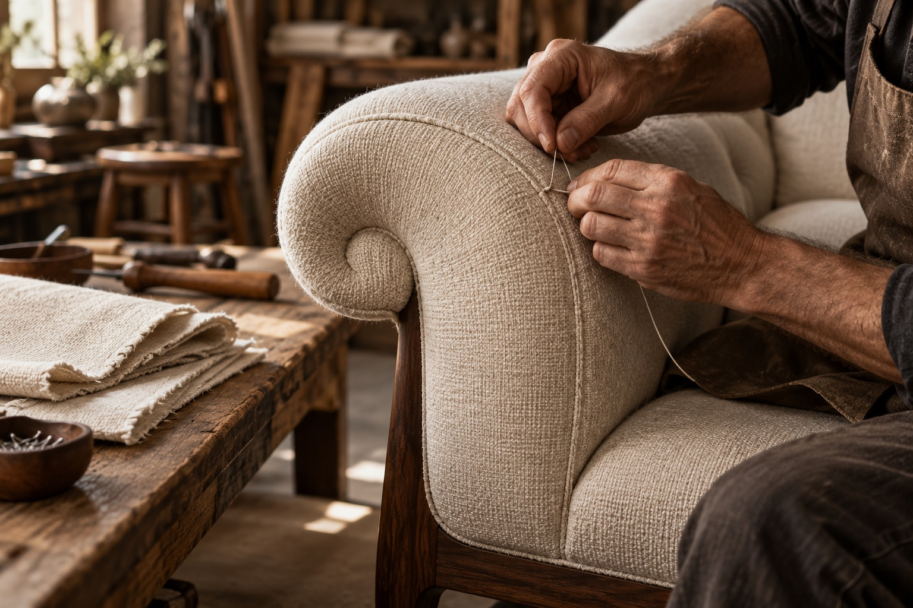

A frame with a clear specification.
Start with the proposed structure, joints and support system. Request a written construction specification for the selected model and discuss how dimensions and stability will be checked.

AI-generated craft illustration03 / WELCOME SOFAS AND MORE · CRAFTSMANSHIP
A manufacturing enquiry starts with a clear specification: frame construction, dimensions, cushioning, upholstery and finishing. Discuss the details that define the model and the checks to agree before production.
Begin with dimensions, frame specifications and the way the piece will live in its space.
Discuss seat depth, cushion feel, upholstery composition and the performance your project needs.
Agree on seam details, finish samples and inspection criteria before production is confirmed.
WELCOME SOFAS AND MORE / THE CRAFT
The quality of a sofa is a conversation about details.
Here is what to explore in your manufacturing brief.
Start with the proposed structure, joints and support system. Request a written construction specification for the selected model and discuss how dimensions and stability will be checked.
Seat depth, cushion build-up and back support shape the sitting experience. Agree a sample or comfort reference where possible and record any changes before approving the order.
Fabric direction, seam placement, piping and tension change the character of a sofa. Review these details against the actual silhouette, particularly on curves, corners and repeated modules.
Discuss cushion alignment, exposed finishes and the visual inspection criteria for your order. Agree packing, labelling and care documentation as part of the handover.
A SHARED REFERENCE FOR YOUR ORDER
For a wholesale order, a clear approval reference helps everyone discuss the same result. Use this checklist when agreeing samples and specifications with Welcome Sofas and More.
Confirm drawings, dimensions, configuration, arm profile, leg style and any left/right orientation. Record the revision that is approved for manufacture.
Identify the upholstery sample, colour reference and finish. Ask for the relevant composition, care and performance information for the selected material.
Discuss the cushion and support specification, sample feedback and any agreed changes. Keep aesthetic approval and comfort approval clear.
Agree the final quantity schedule, inspection process, packing requirements and delivery responsibilities. Confirm production timing in the quotation.
06 / UPHOLSTERY & FINISH SPECIFICATIONS
Explore upholstery directions for your proposed range. Select a material to include in your wholesale brief, then confirm samples and performance requirements for the intended use.
A relaxed, textured direction with soft tonal variation and an understated, natural feel.
Digital swatches are indicative. Request physical samples and confirm composition, care and performance.
07 / A CLEARER BRIEF
Define what matters to your project.
Confirm the specifics before you commit.
Share plans, room dimensions, preferred seat count and access constraints. Final drawings and dimensions should be approved before an order.
Specify upholstery, frame, cushion and finish requirements, including any project-specific fire, abrasion or cleaning standards. Certifications must be verified for the selected specification.
Include quantities, delivery location and target installation date. Minimum orders, capacity, pricing and lead times are subject to a confirmed quotation.
Ask about sample approval, inspection arrangements, care instructions and written warranty terms for your selected design.
LET’S MAKE SOMETHING EXCEPTIONAL
Share your models, quantities and specifications to start a wholesale discussion.